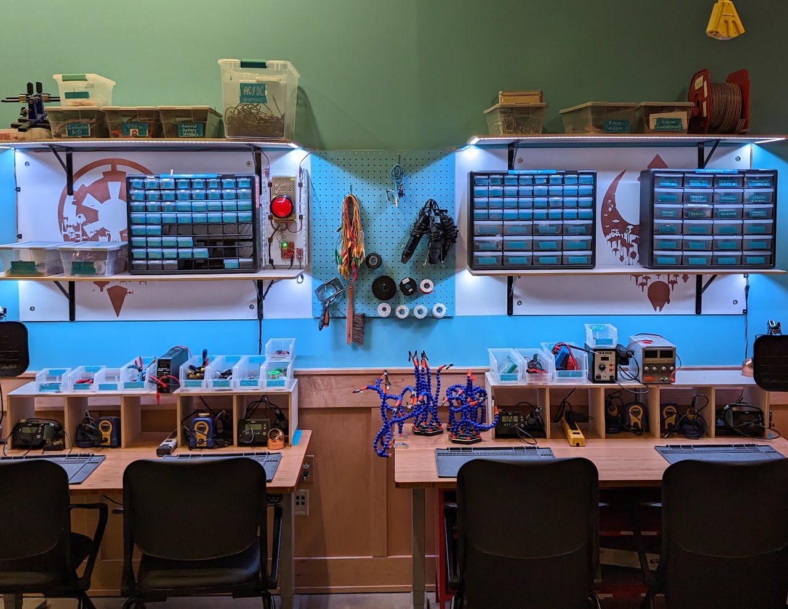
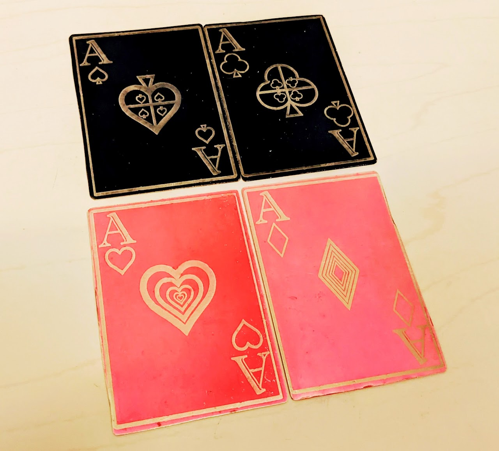
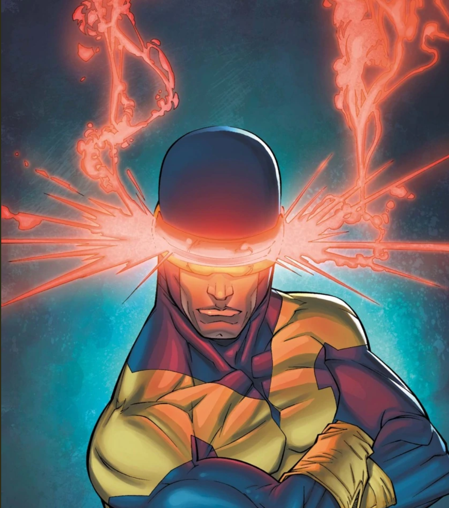
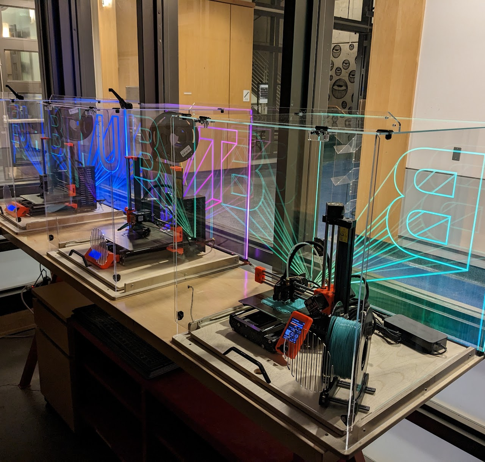
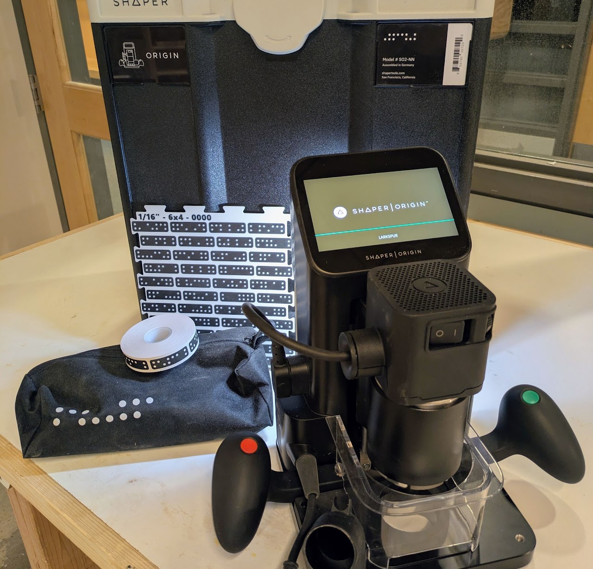

Electronics
Electronics equipment is labeled... teal? Cyan? Turquoise? Aqua? Oh, lort...THIS COLOR!
|
 |
With great power...Electronics and coding training happens as requested by staff and/or community members. It is also the subject of some ATLAS classes and BTU workshops. See workshops on the BTU Lab Calendar. See the BTU Mischief Maker page to contact one of our community experts to get you started. |
Electronics Equipment & Supplies
|
|
Lasers!
Laser equipment and materials are labeled RED!!!
FACULTY: Class assignments requiring laser cutting should be facilitated by LAs or TAs, or instructors.
STUDENTS: Assistance with laser cutting for class assignments should be facilitated by class LAs or TAs first, then "Lazor Wizards", if available.
EVERYBODY: *Laser cutter access is separate from general BTU access and REQUIRES AN ORIENTATION.*
|
 |
Laser Cutter OrientationsThe Laser Cutter Orientation schedule can be found on the BTU Lab Calendar. Anyone can gain access to operate the laser cutter using the process described below. Prior to that, schedule a time to complete your laser cutting job with one of the Lazor Wizards listed below, and on the BTU Mischief Maker page. |
Laser Cutting Equipment & Materials
|
|
To gain full independent access to the laser cutters:
|
FACULTY: Class assignments requiring laser cutting should be facilitated by LAs or TAs, or instructors.
STUDENTS: Assistance with laser cutting for class assignments should be facilitated by class LAs or TAs first, then "Lazor Wizards", if available.
EVERYBODY: *Laser cutter access is separate from general BTU access and REQUIRES AN ORIENTATION.*
|
 |
BTU Lazor WizardsEmail all Lazor Wizards: Subject must say: "Lazor Wizards" Copy/Paste these addresses: [geba2669@colorado.edu, zaja9653@colorado.edu, xin.wen@colorado.edu, sena.ucuk@colorado.edu, ellyse.jensen@colorado.edu] |
3D Printers
3D Printing equipment and materials are labeled PURPLE.
FACULTY: Class assignments requiring 3D printing should be coordinated by LAs, TAs, or instructors. (Questions: "zack.weaver@colorado.edu")
STUDENTS: Assistance with 3D Printing for class assignments should be coordinated with class LAs or TAs first, then "BTU Mischief Makers", if available.
EVERYBODY: 3D printing hardware/software update frequently! Make sure you stay up to date, too.
|
 |
The Revolution will be printed...3D Printers located in the main space are for intended use only! Additional 3D printers are available for experimentation. Contact a Mischief Maker to set it up. We got you! 3D Printing is also the subject of some workshops. See workshops on the BTU Lab Calendar. Jobs are run on a first-come-first-served basis***. ! PRUSA SLICER software is provided and required ! |
"Intended" Use of BTU Lab 3D Printers
3D Printing Equipment and Materials
|
|
CNC
We got one!
CNC equipment and materials are labeled BLUE.
FACULTY: Class assignments requiring Shaper CNC should be coordinated by LAs, TAs, or instructors. (Questions: "zack.weaver@colorado.edu")
STUDENTS: Assistance with Shaper CNC for class assignments should be coordinated with class LAs or TAs first, then "BTU Mischief Makers", if available.
EVERYBODY: A brief training is required before using the Shaper CNC.
|
 |
'Cause I'm C N C ...Dynamite!Thanks to generous support BTU purchased a Shaper Origin CNC router in 2026! Basic operation of the Shaper can be found here: Shaper CNC Tutorial The Shaper is a precision (expensive) tool! Please contact Zack at zack.weaver@colorado.edu to get started. |